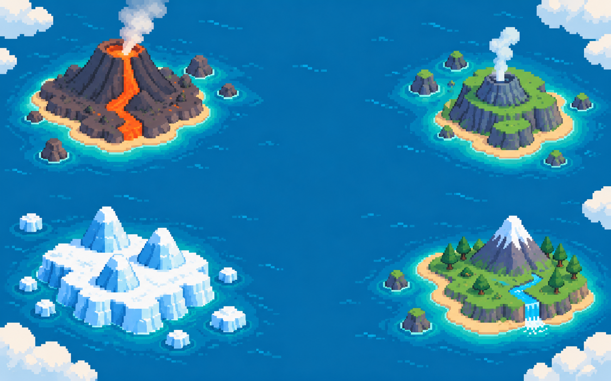

HADEAN 4.54–4.0 BYA ARCHEAN 4.0–2.5 BYA PROTEROZOIC 2.5 BYA–538.8 MYA PHANEROZOIC 538.8 MYA–NOWDEEP TIME ATLAS
THE MAP
OF LIFE
A playable path through
4.54 billion years of Earth.
CHOOSE AN ISLAND TO EXPLORE